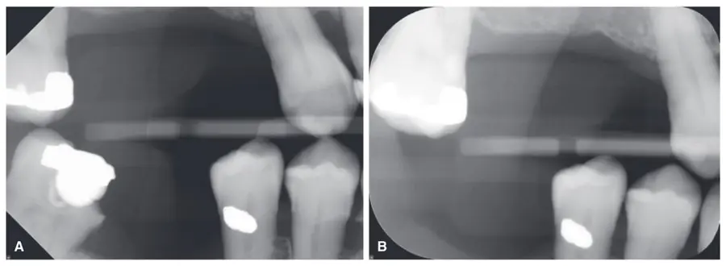
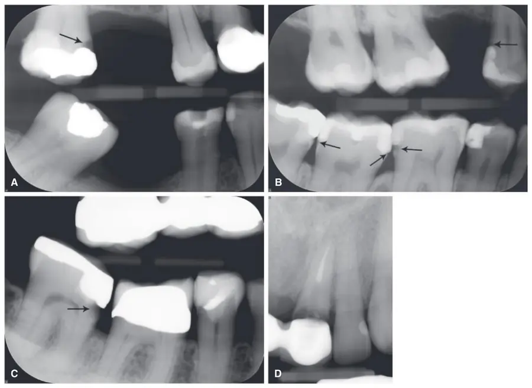

نسخه استخراجشده؛ ترجمه یا تأیید علمی انجام نشده است. وضعیت: captured
هیچ مطالعهای توافق صددرصدی میان ناظران در تشخیص پوسیدگی نشان نداده است. این «بهویژه در پوسیدگی مینا صادق است، ولی گاهی در پوسیدگی عاج هم رخ میدهد».

و مقصر اصلی؟ «هرچند چنین یافتههایی میتوانند ناشی از تنوع مورفولوژی دندان باشند، شایعترین منشأ خطای مثبت کاذب، بدفهمی سرویکال برناوت بهعنوان پوسیدگی دندانی است.»
سازوکار — همان که در یونیت ۱ خواندی، این بار دقیقتر: وقتی پرتو به سطح پروگزیمال محدب دندان میرسد، «فوتونهایی که تقریباً مماسی از سطح دندان میگذرند با ساختار دندانی کمتری روبهرو میشوند تا فوتونهایی که از عمق دندان عبور میکنند». این ناحیهی تحدب «معمولاً در محل یا کمی آپیکالتر از حاشیهی تحتانی CEJ، نزدیک ارتفاع نرمال کرست آلوئولار» قرار دارد.
دو حالت خاص: در دندانهای تکریشه، «وجود یک فرورفتگی یا تقعر کمعمق روی سطح مزیال یا دیستال ریشه میتواند ناحیه را رادیولوسنتتر نشان دهد». در دندانهای چندریشه، «برناوت وقتی دیده میشود که ریشههای باکالیتر با ریشهی لینگوال یا پالاتال در راستای مزیودیستال کاملاً روی هم نیفتند».
و یک نشانهی طلایی برای این حالت دوم: «حضور دو ریشهی رویهمافتاده را میتوان با شناسایی فضاهای لیگامان پریودنتال هر ریشه تأیید کرد.» یعنی اگر دو فضای PDL جدا ببینی، فهمیدهای دو ریشه در تصویرند و تیرگی از همپوشانی ناقص آمده.
سه نشانهی افتراقی برناوت از پوسیدگی — همه یکجا میآیند:
و شایعترین خطای فنی که مثبت کاذب را بدتر میکند: «همپوشانی میان سطوح پروگزیمال دندانهای مجاور روی بایتوینگ. این را میتوان بهراحتی با تنظیم زاویهی افقی پرتو تا همراستا شدن با صفحهی سنسور اصلاح کرد.» تجربهی دندانپزشک هم «نقشی محوری در کنترل شمار یافتههای مثبت کاذب» دارد. زاویهی عمودی نادرست هم دردسر خودش را دارد: تصویر ترمیم ممکن است روی حاشیهاش بیفتد و پوسیدگی عودکننده را بپوشاند.
یک نوار تاریک باریک درست زیر مینا، در امتداد DEJ. پوسیدگی گسترده؟ یا چشمِ تو؟

این پدیده نام دارد: اثر مکباند. در پوسیدگی اکلوزال، دندانپزشک ممکن است «یک خط رادیولوسنت در امتداد DEJ» ببیند که «با پخش گستردهتر ضایعه اشتباه گرفته میشود». این ظاهر در پوسیدگی سطح پروگزیمال هم دیده میشود، «ولی در این محل اغلب برجستهتر است».
و علتش اصلاً در دندان نیست — در شبکیهی توست: این آرتیفکت «ناشی از کنتراست افتراقی میان مینای رادیواوپکتر و عاج کماوپکتر است». نخستین بار ارنست ماخ در ۱۸۶۵ توصیفش کرد. «این توهم بینایی از تحریک و مهار افتراقی گیرندههای همسایه در شبکیهی چشم پدید میآید: وقتی مجموعهای از گیرندههای شبکیه با ادراک دانسیتهی بسیار رادیواوپک مینا بیشتحریک میشوند، گیرندههای مجاور که عاجِ رادیولوسنتتر را درک میکنند مهار میشوند.» نتیجه: ادراک یک نوار رادیولوسنت در عاج سطحی، درست کنار DEJ.
و آزمون قطعی — این را در مطب به کار ببر: «برای غلبه بر اثر مکباند، دندانپزشک میتواند مینای رادیواوپکتر را بپوشاند. اگر نوار مک ناپدید شد، تفسیر این نتیجه آن است که پوسیدگی وجود ندارد. اگر نوار مک همچنان دیده شد، پوسیدگی هست.»
و اگر ضایعهای تنها روی تصویر دیده شود و شواهد بالینی بیماری نباشد؟ «معقول است که ناحیه مشاهده و پایش شود تا از درمان غیرضروری پرهیز گردد.»
گروه دوم مثبت کاذب: مواد ترمیمی رادیولوسنت. «برخی مواد مورد استفاده در دندانپزشکی ترمیمی ظاهر رادیولوسنت دارند و ممکن است با پوسیدگی عودکننده یا باقیمانده اشتباه شوند.» این مواد معمولاً بهعنوان بیس یا لاینر روی سطح تراشخورده زیر ترمیم به کار میروند.
سه راه تفکیک:
و کامپوزیتهای قدیمیتر هم همین اشتباه را میسازند — اغلب برای ترمیم بیندندانی در ماگزیلای قدامی به کار میرفتند. تفکیکشان از پوسیدگی با حاشیههای واضح، شکلشان، و گاهی بیس یا لاینر رادیواوپک زیرشان ممکن است.